Debugging with Thonny¶
Programming mistakes¶
Everyone makes mistakes—even experienced programmers.
Python is good at finding some mistakes, like syntax errors (when the code is written wrong) and run-time errors (when something goes wrong while the program is running).
There is another type of mistake called a logic error. This happens when your code runs without crashing, but it does not do what you expected.
For example, type the code below and save it as buggy_code.py or download buggy_code.py file and save it in your lesson folder.
1def add_underscores(word):
2 new_word = "_"
3 for index in range(len(word)):
4 new_word = word[index] + "_"
5 return new_word
6
7phrase = "hello"
8print(add_underscores(phrase))
The expected output is _h_e_l_l_o_. When you run the program, it actually shows o_.
This means there is a logic error.
Logic errors cause unexpected results called bugs. Debugging is the process of finding and fixing these bugs.
A debugger is a tool that helps you track down bugs and see what your program is doing step by step.
Learning how to find and fix bugs is an important skill you will use whenever you write code.
Using Thonny’s Debugger¶
To debug buggy_code.py, you need to learn how to use debugging tools.
Thonny has a built-in debugger, but first you need to set it up correctly.
Open the View menu and make sure there is a tick next to:
Stack
Variables
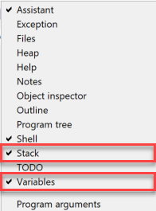
To start using Thonny’s debugger, click the Debug button.
Controlling the debugger¶
To understand how the debugger works, start by writing a simple program with no bugs.
Type the code below into Thonny and save it as debug_a.py:
1names = ["michelle", "nicole", "simone", "emma"]
2
3for name in names:
4 name = name.capitalize()
5 print(f"Hello {name} how are you this morning")
Now start the debugger in Thonny.
Your Thonny window should now look like the image below:
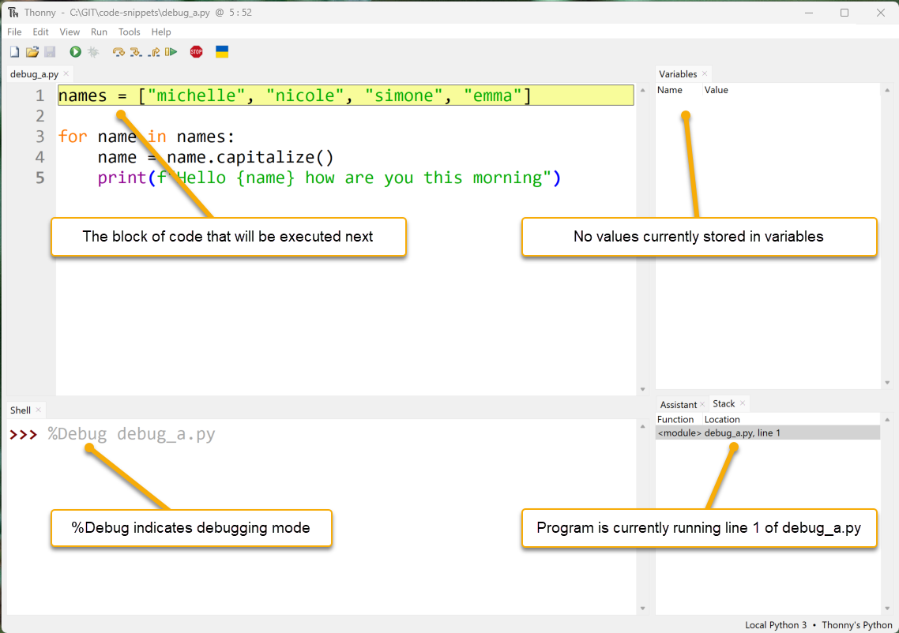
Code Panel: Thonny has paused the program. The yellow line shows the next line of code that will run.
Variables Panel: No variables are shown yet because nothing has been saved to memory.
Shell Panel:
%Debugis the command used to start the program (debug_a.py).Stack Panel: Shows which part of the program is currently running.
You will also notice that new debugging buttons are now available.
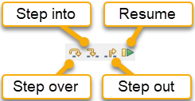
Lets see how they work.
Debugging a Logic Error¶
First, let’s look closely at buggy_code.py:
1def add_underscores(word):
2 new_word = "_"
3 for index in range(len(word)):
4 new_word = word[index] + "_"
5 return new_word
6
7phrase = "hello"
8print(add_underscores(phrase))
Guess where the bug is located¶
The first step is to find the part of the code that might have the bug.
You might not know the exact line, so make a good guess about which section could be wrong.
This program has two main parts:
a function (
lines 1to5)the main code
Main code:
line 7 → creates a variable called
phrasewith the value"hello"line 8 → prints the result of
add_underscores(phrase)
Start by looking at the main code section.
7phrase = "hello"
8print(add_underscores(phrase))
Do you think the problem is here? It doesn’t look like it. These two lines seem correct.
So, the bug is probably in the function.
1def add_underscores(word):
2 new_word = "_"
3 for index in range(len(word)):
4 new_word = word[index] + "_"
5 return new_word
The first line in the function creates a variable called new_word with the value "_". That part looks correct.
So, the bug is likely somewhere inside the for loop.
Set a breakpoint to inspect code¶
Now that you know where the bug is likely to be, add a breakpoint at the start of the for loop.
This will let you step through the loop and see exactly what is happening using the debugger.
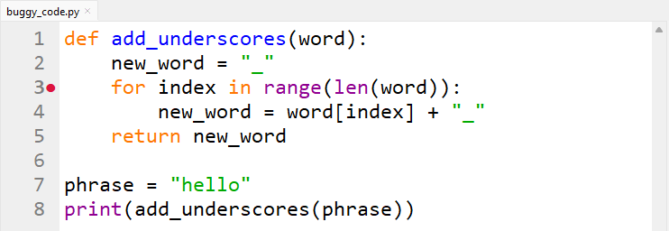
Click the Debug button to start the debugger.
Thonny will run the program until it reaches the breakpoint.
Your screen should now look like the image below. You will also notice some new features that you haven’t seen before.
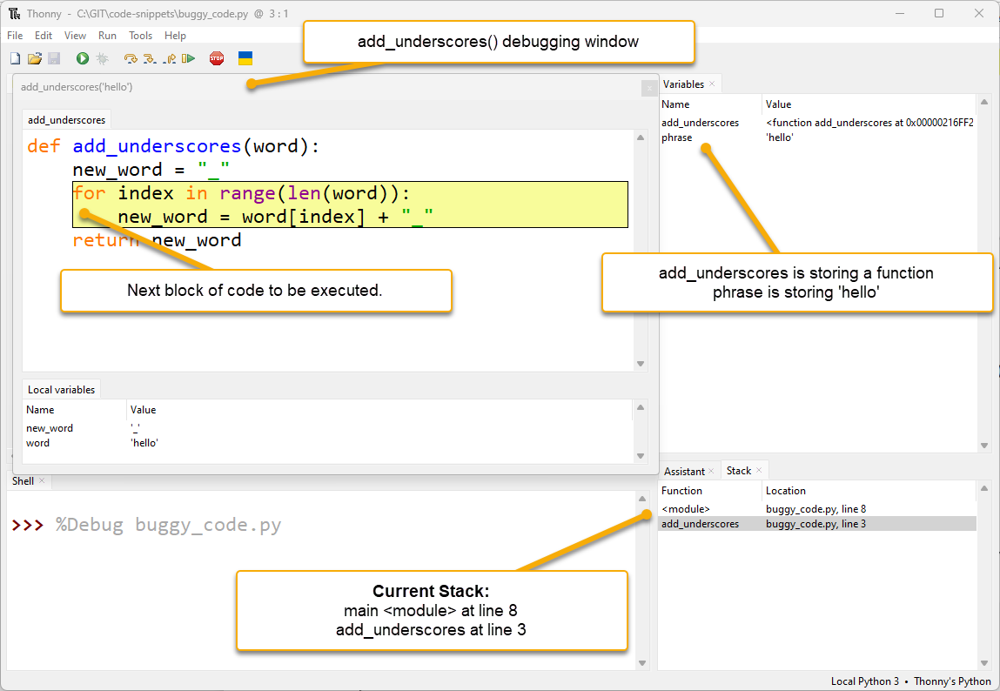
extra debugging window:
Thonny opens a new window for the function
add_underscores("hello")This happens whenever Python starts working inside a function
You can see the local variables at the bottom of this window
Local variables are variables that only exist inside that function
multiple stack values:
the Stack panel now shows two entries
<module>→ the main programadd_underscores→ the function
this tells you the program is currently at:
line 8 in the main program
line 3 inside the
add_underscoresfunction
Stack timeline
Line 8 in the main program calls the
add_underscoresfunctionPython pauses the main program at line 8 and waits for the function to finish
When the function finishes, the main program continues from line 8
Back to debugging.
Look at the add_underscores window. It shows two variables:
wordhas the value"hello"new_wordhas the value"_"
These are correct so far.
Now, keep stepping through the code.
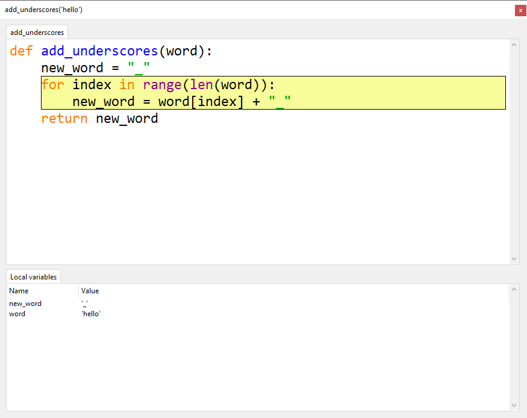
Click:
Step into once
Step over twice
You should now have new_word = word[index] + "_" highlighted and ready to run, like in the image below.
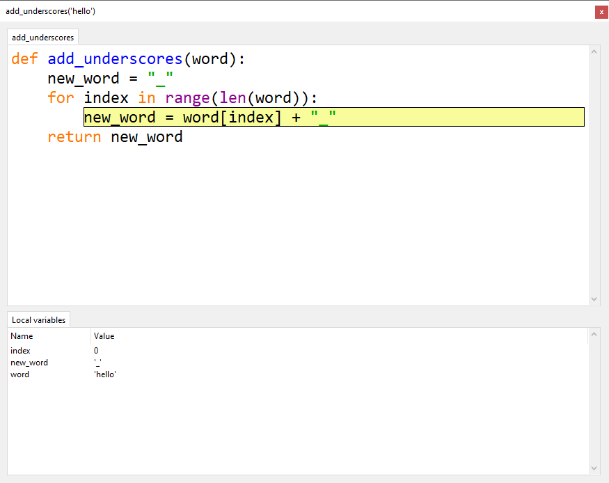
Notice that the local variable index is storing 0.
This is correct for the first time through the loop.
Can’t see the index variable?
If you cannot see the index variable, resize the Local variables panel so it is bigger.
Now click Step over to run new_word = word[index] + "_" and look at what happens.
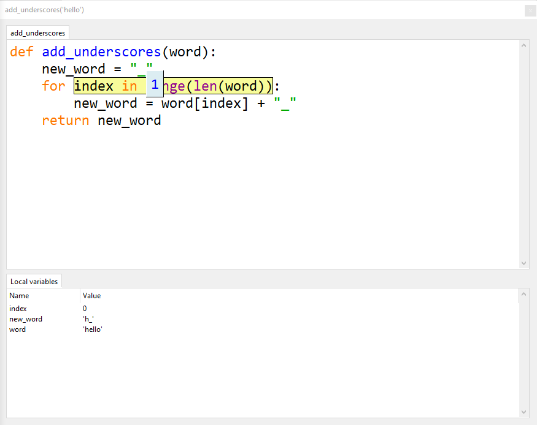
Notice that new_word now stores "h_", but we wanted it to store "_h_".
That means part of the value was replaced instead of added to.
This is the exact place where the bug happens.
Investigate the error¶
Now that you know the bug is in this line:
new_word = word[index] + "_"
look at that line more closely to see what Python is doing.
First:
click Stop
then click Debug again
Next, click:
Step into once
Step over twice
You should now have the problem line highlighted and ready to run, like in the image below.
This time, step into the code so you can see each small part of what Python is doing.
Click Step into once. So far, everything still looks correct.
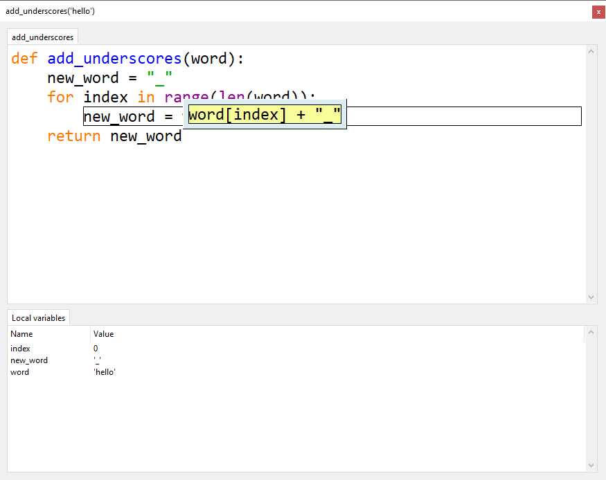
Click Step into again. Everything still looks correct.
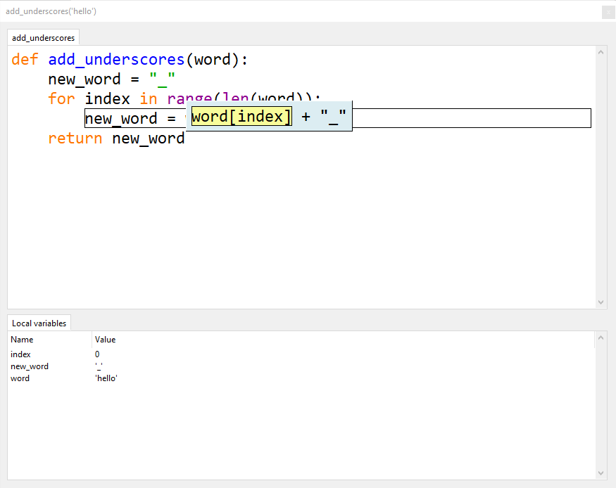
Click Step into a third time. Everything still looks correct.
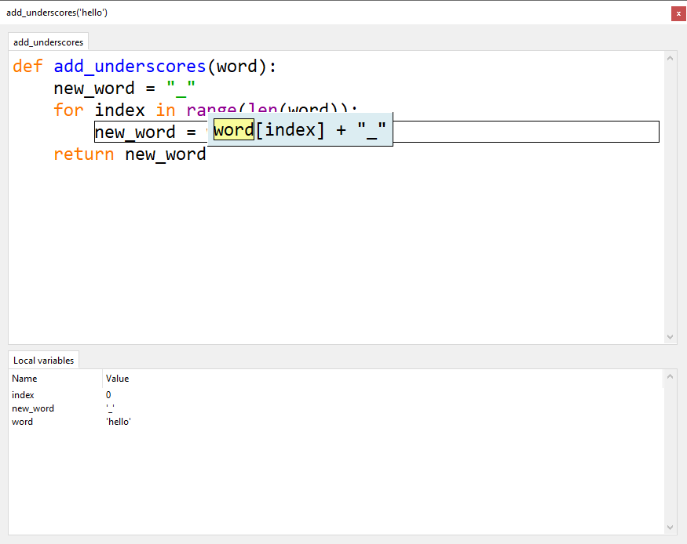
Keep clicking Step into and watch what happens in the Local variables panel.
Stop when your add_underscores("hello") looks like the one below.
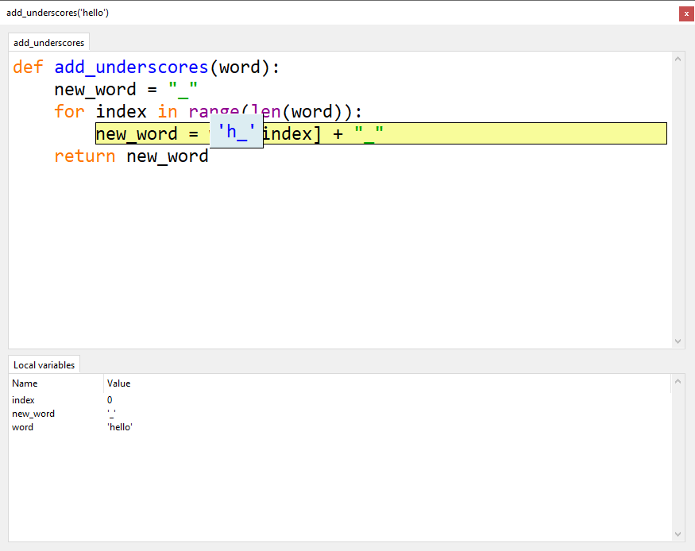
Look closely at the debugging window. You should notice:
Python is about to store
"h_"innew_wordthis is wrong
we want it to store
"_h_"instead
Now you know exactly where the bug is, you need to work out why it is happening.
Fix the error¶
The add_underscores() function is meant to put a _ between each letter. It should do this by repeatedly adding the next letter and _ to the value already stored in new_word.
But the code is replacing new_word each time. This means it loses all the letters that were added before.
To fix this, the current value of new_word needs to be added at the front:
new_word = new_word + word[index] + "_"
Stop debugging and change the code to this line.
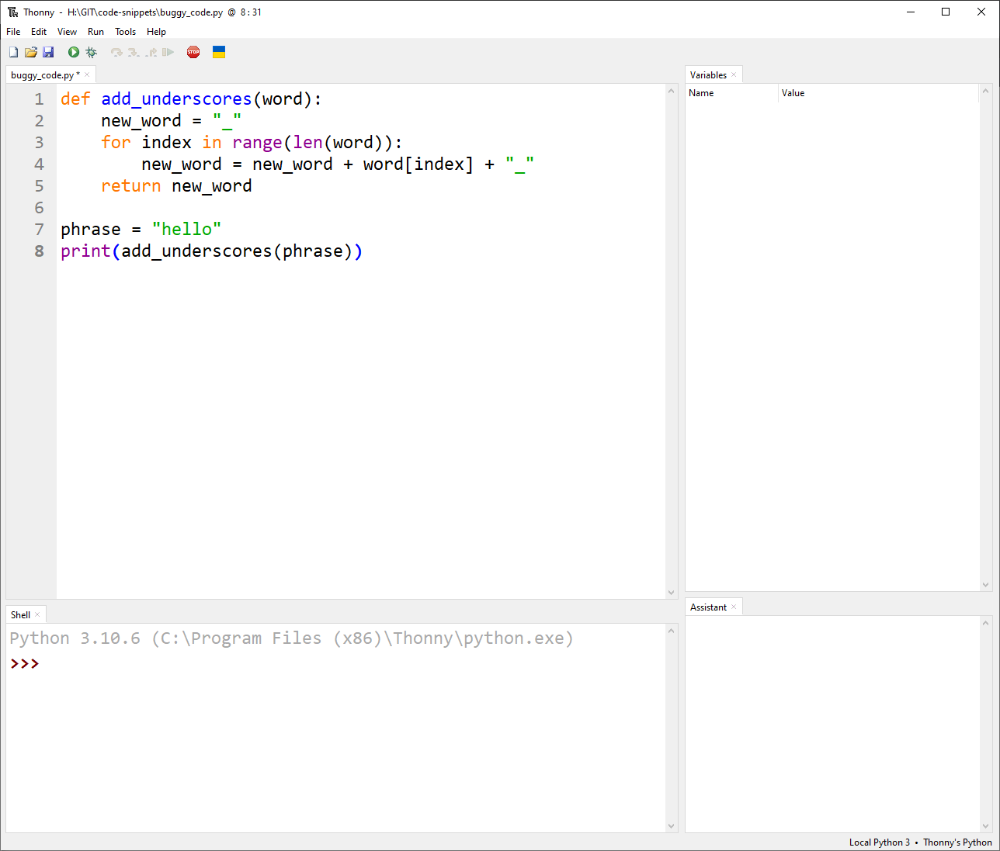
Run the program normally. Does it show _h_e_l_l_o_?
If it does, the problem is fixed.
You have successfully found and fixed a bug in your code.